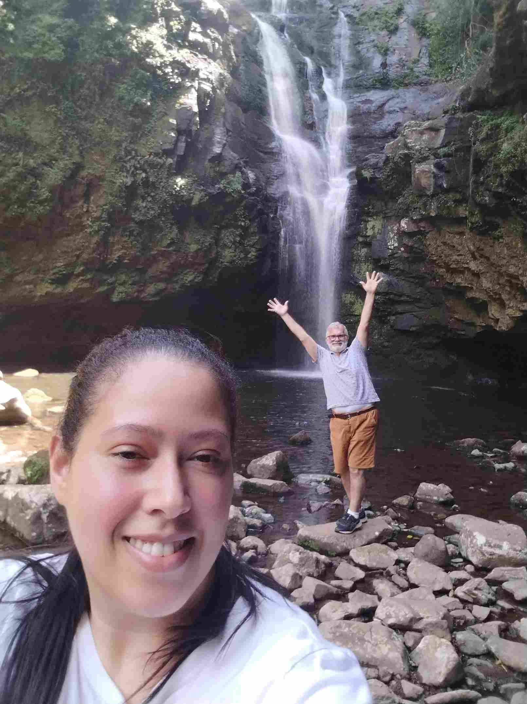

Tatiane Krieger
About Me

My name is Tatiane, i live in Rio Grande do Sul, Brasil. I'm studying Software Development, and i'm focused on mastering web architecture and creating dynamic applications. I enjoy doing outdoor activities like picnics and hiking, and i love to cook.
Rio Grande do Sul
The culture of Rio Grande do Sul is one of the richest and most distinct in Brazil, characterized by a strong regionalist sentiment and a fusion of indigenous (such as the Guarani and Charrua), European (especially Portuguese, Spanish, German, and Italian), and African influences. This "gaucho" identity is experienced daily through customs, clothing, and festivals that preserve the historical roots of the state.